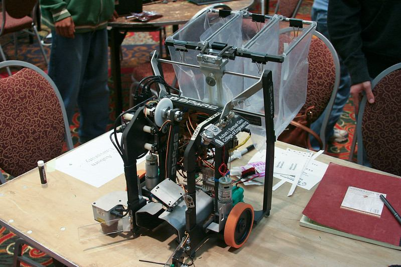

Autonomous
Debris Collector
The project objective was to design and build a trash collector capable of autonomously maneuvering a designated playing field, retrieving and sorting randomly scattered debris consisting of aluminum soda cans, plastic bottles, and glass bottles. Hardware implemented includes an Arduino motherboard, Parallax distance sensors, Hokuyo scanning rangefinder, and Hitec servos. The team competed at the IEEE SECon 2009 Competition in Atlanta, GA and placed first place overall. The project was organized through Auburn University's SPARC program — a student-led organization fostering creativity and innovation through collaborative engineering projects.
The team competed against collegiate robotics teams from across the region at the IEEE SECon 2009 competition in Atlanta. The autonomous debris collector successfully navigated the playing field and sorted mixed debris materials, earning first place overall.